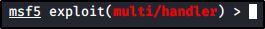

Manual way to exploit SMB without Metasploit: AutoBlue
https://github.com/3ndG4me/AutoBlue-MS17-010


We can check the target:


Let's follow the instructions:


(This will create a Metasploit Listener)


Last step: A session into Metasploit listener will be created